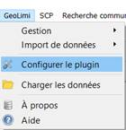
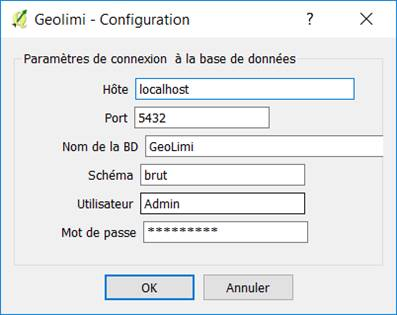

Configuration du plug-in
Pour commencer à utiliser le plug-in et pour pouvoir charger les données, il faut paramétrer le plug-in ainsi que la connexion à la base de données GeoLimi.
Pour cela rendez-vous dans le menu de GeoLimi et cliquer sur "Configurer le plug-in"

La fenêtre suivante s'affiche :

- Il faut indiquer l’hôte de la base de données. L’hôte correspond au serveur où se trouve la base de données.
- Ensuite il faut spécifier le port du serveur qui par défaut est 5432.
- Ensuite on indique le nom de la base qui est GeoLimi.
- Ensuite on définit le schéma de la base qui est "brut".
- Enfin on rentre le nom d’utilisateur et le mot de passe.
Les informations seront normalement définies par défaut pour l’Hôte de la base, le port, le nom de la BD et le schéma.